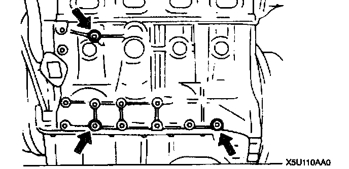
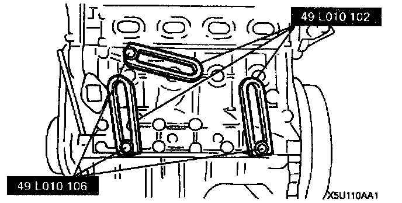
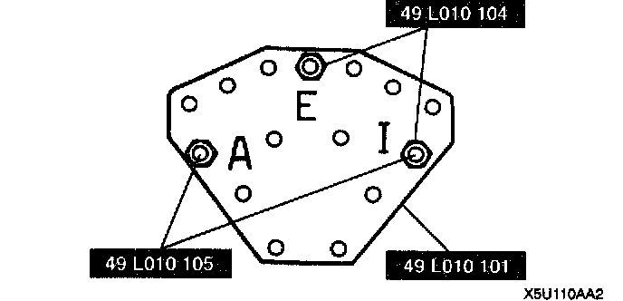
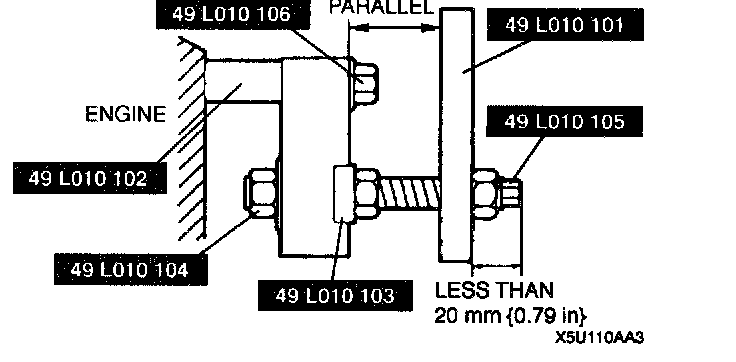
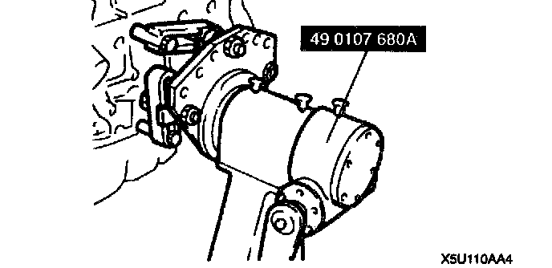

Engine Mounting/Dismounting
ENGINE MOUNTING / DISMOUNTING
Mounting

1. Use the holes shown in the figure.

2. Install the SST (arms) to the cylinder block holes as shown, and hand-tighten the SST (bolts),

3. Assemble the SST (bolts, nuts, and plate) in the specified positions.
4. Install the SST assembled in step 3 to the respective arms.

5. Adjust the SST (bolts) so that less than 20 mm (0.79 inch) of thread is exposed.
6. Make the SST (plate and arms) parallel by adjusting the SST (bolts and nuts).
7. Tighten the SST (bolts and nuts) to affix the SST firmly
Warning: The self-locking brake system of the engine stand may not be effective when the engine Is held in an unbalanced position. This could lead to sudden, rapid movement of the engine and mounting stand handle and cause serious injury. Never keep the engine In an unbalanced position, and always hold the rotation handle firmly turning the engine.

8. Mount the engine on the SST (engine stand).
9. Drain the engine oil.
10. Install the oil drain plug.
Tightening torque 30 - 41 Nm (3.0 - 4.2 kgf-m, 22 - 30 ft. lbs.)
Dismounting
^ Dismount in the reverse order of mounting.